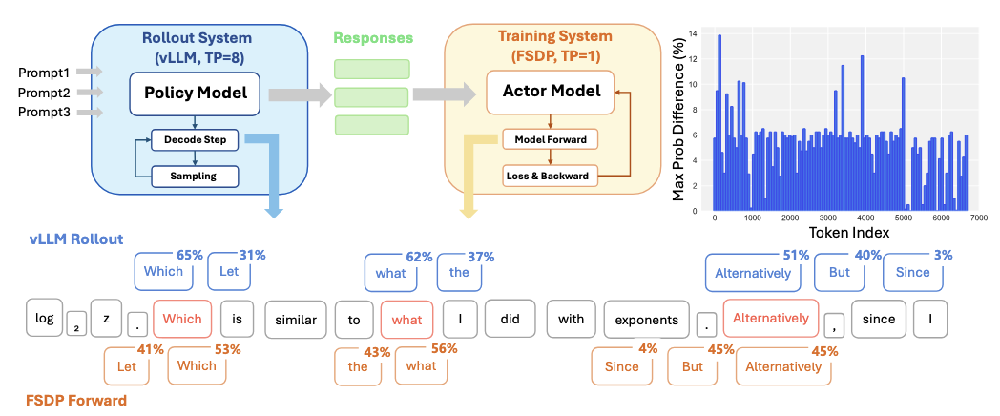
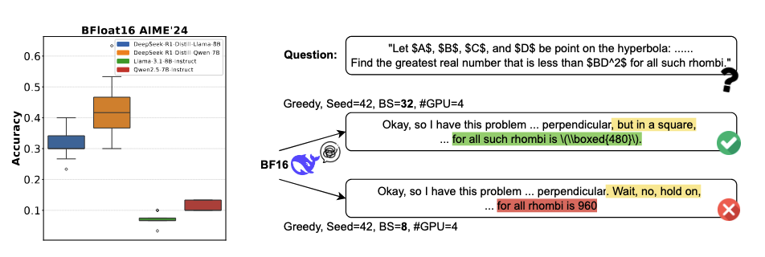
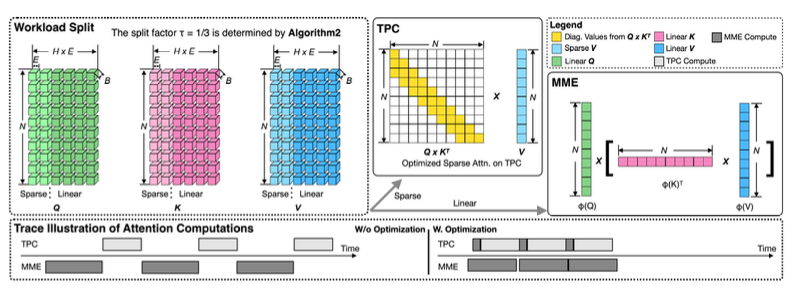

|
Xinheng "Asher" Ding | 丁欣恒
Hi, I am currently a Ph.D. student in Computer Science at the University of Minnesota Twin Cities, fortunate to work with my awesome advisor, Dr. Zirui "Ray" Liu🤩.
From August 2024 to July 2025, I spent a year as a Computer Engineering Ph.D. student at Indiana University Bloomington, where I was supervised by Dr. Dingwen Tao and Dr. Fengguang Song. Prior to that, I received my Bachelor’s degree in Engineering from the Department of Automation at the University of Science and Technology of China (USTC).
🎯 I am striving to grow into a professional, active, and influential researcher. If you have any suggestions, comments, critiques, encouragement, or collaboration opportunities, feel free to share them with me—I would greatly appreciate it.(^_^)
Email /
CV /
Linkedin /
Google Scholar /
X /
Github /
|
|
Research Interests
I am broadly interested in the fields related to high-performance computing (HPC), artificial intelligence, and their intersection.
- High-Performance Computing: GPU Programming, Parallel I/O, File System
- Machine Learning: Long-Term Memory, Efficient ML
|
News
- 09/2025: One paper accepted by NeurIPS as Oral Presentation! See you in San Diego!
- 09/2025: Our paper propose the issue of nondeterminism in LLM inference and has attracted broad attention. It was recently featured in a blog post by the Thinking Machines Lab.
- 08/2025: Started my Ph.D. journey at University of Minnesota Twin Cities.
|
|
$U_t = R_t + \gamma U_{t+1}$
|
Mathematical Foundations of RL
Feb 9, 2026
Instead of focusing on specific RL algorithms, this blog explains in as much detail as possible all the mathematical foundations involved in reinforcement learning: from random variables to the Bellman equations, in a way that even high school students can understand.
|
|

|
Deterministic Inference across Tensor Parallel Sizes That Eliminates Training-Inference Mismatch
Ziyang Zhang*, Xinheng Ding*, Jiayi Yuan, Rixin Liu, Huizi Mao, Jiarong Xing, Zirui Liu
Preprint, 2025, Used in SGLang
Paper / Blog
|
|

|
Understanding and Mitigating Numerical Sources of Nondeterminism in LLM Inference
Jiayi Yuan*, Hao Li*, Xinheng Ding, Wenya Xie, Yu-Jhe Li, Wentian Zhao, Kun Wan, Jing Shi, Xia Hu, Zirui Liu
NeurIPS, 2025, Oral Presentation (Acceptance Rate: 0.03%)
Paper / Talk
|
|

|
GFormer: Accelerating Large Language Models with Optimized Transformers on Gaudi Processors
Chengming Zhang, Xinheng Ding, Baixi Sun, Xiaodong Yu, Weijian Zheng, Zhen Xie, Dingwen Tao
Preprint, 2024
Paper
|
Selected Awards and Honors
- 2025: Luddy Doctoral Summer Fellowship, Indiana University Bloomington
- 2024: Outstanding Graduate of USTC
- 2021-2023: Cyrus Tang Scholarship, USTC Thrice
- 2021-2023: National Encouragement Scholarship, USTC Thrice
- 2022: Lanfeng Scholarship, USTC
- 2021: USTC Outstanding Student Scholarship, Silver
- 2020: USTC Freshman Scholarship
|
|
{kind=link}